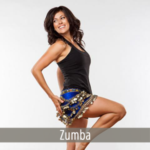
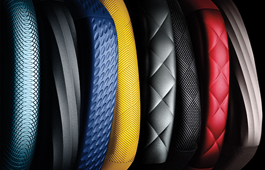
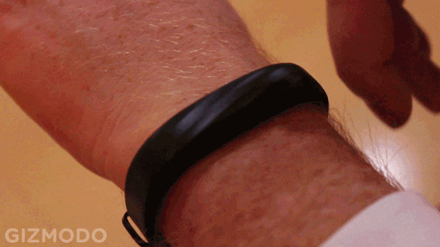
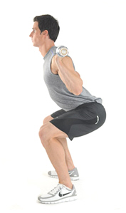

Blogger of the Month
Posted on: March 26, 2015
Gina
Gina has been tremedous at sharing some of her daily happenings, as well as quick, effective workouts and healthy recipes. She began writing The Fitnessista blog when She was living in Valdosta, Georgia. The blog became a little way to share healthy recipes and workouts with some of her personal training clients and since that time we have been able to see a lot changed through her posts.
Her eating style for one, started off the blog eating “diet foods” and eventually transitioned to more whole, unprocessed foods. She also experimented with pescatarianism but went back to eating chicken a couple of years later. Today she focuses on lean protein, fruits, veggies, and grains.
Gina currently teaches group fitness classes at a world-renowned health resort, in addition to being a full-time mom, wife and blogger.
Gina also holds many certifications:
- AFAA certified group fitness instructor
- NASM certified personal trainer
- NASM weight loss specialist
- Zumba licensed, Aqua Zumba licensed and ZIN member
- Les Mills BODYPUMP certified instructor
- Level 1 Raw Foods Chef (105degrees)
Be sure to check out Gina's blog to find more about her and her work on:
The Fitnessista
Nutrition
Posted on: March 2, 2015
Cherry, Pecan and Kale Salad
The beauty of this salad is that it can be adapted based on what you have on hand.Well...
That and it taste Delicious! Not to mention Nutritious.
Here are the basic components for success:
Kale
- Hearty grain (try job’s tears, barley or wheat berries)
- Dried fruit (try yellow raisins or dried cranberries)
- Nuts (walnuts or slivered almonds would work well here)
- Celery for crunch and texture
- Dressing (try red wine vinegar or rice wine vinegar-based options)
The combination you ended up with has a great balance of chewy and crunchy elements with the sweetness of the cherries balanced by the apple-cider vinaigrette.
Main Ingredients
- 2 bunches kale, trimmed and fine-chopped
- 2 stalks celery, fine-chopped
- 1 cup dry farro cooked according to instructions (~20 minutes, then cooked them on the stovetop for 30 minutes)
- 1 cup dried cherries
- 3/4 cup pecans. toasted
Dressing
- 3/4 cup good olive oil
- 1/4 cup apple cider vinegar
- 2 tablespoons brown rice syrup (honey or agave syrup would also work, brown rice syrup was what I had on hand)
- 2 teaspoons salt, or to taste
- cracked pepper to taste
Make
To make the dressing, combine all ingredients in a glass jar and shake until well mixed.
Place kale, celery, farro, cherries and pecans in a large mixing bowl and add dressing.
Toss to combine. I also usually massage by hand to soften up the kale a bit. This salad
tastes best when you make ahead and allow it to sit for a few hours before eating, but
it’s great either way.
Optionally, consider adding cheese. I think shaved parmesan would have done nicely.
New Exercise
Posted on: February 11, 2015
Pull Ups
We’ve all heard the old adage “You’ve got to learn how to crawl before you can learn how to walk.” Nothing could be more accurate in the gym. Unfortunately, when it comes to their training and exercise selection, most people suffer through workouts that don’t deliver the best results because they perform exercises beyond their ability. Performing exercise variations that are too advanced for your current level of fitness, or attempting to progress towards these variations too quickly sets of a disastrous sequence of events: poor body alignment, a lack of control and a reduced range of motion, limited muscle tension, and ultimately lackluster progress and results. Your goal is to perform the right exercises for your current level of fitness–not the most advanced–and work up slowly and progressively over time with proper technique. As part of an ongoing series, you’ll learn how to become better at any exercise. This guide will teach you to master the pullup. Choose the appropriate exercise variation based on your current level of fitness, and then build your way to a stronger body.
How to Do More Pullups
Level 1: Chin-ups
How to do it
Hang from an overhead bar, palms facing you, with a shoulder width grip. From a dead hang, flex your elbows and pull yourself up until upper chest contacts the bar. Pause for a full second in the contracted position, pulling your shoulder blades down into your back pockets, before lowering yourself under control back to the starting position. That’s one rep.
Where to Begin
Begin by performing 5 sets of one half your current chin-up maximum. (For example: if you can perform 6 full chin-ups, start with sets of 3 reps), resting 2 minutes between sets.
Your Goal
Work up to performing 5 to 6 sets of 5 to 6 reps, resting 2:00 between sets. Once you’ve achieved the goal, move on to level 2.
Level 2: Mixed Grip Pull-ups
How to do it
Hang from an overhead bar, one palm facing you and one palm facing away from you, with a slightly wider than shoulder width grip. From a dead hang, flex your elbows and pull yourself up until your chin clears the bar. Pause for a full second in the contracted position, pulling your shoulder blades down into your back pockets, before lowering yourself under control back to the starting position. That’s one rep.
Where to Begin
Assuming you’ve mastered level 1, begin by performing 6 sets of 3 reps (alternate your grip each set), resting 2:00 between sets.
The Goal
Work up to performing 6 sets of 5 to 6 reps (alternating your grip each set), resting 2:00 between sets. Once you’ve achieved the goal move on to level 3.

Level 3: Pull-ups
Description
"Hang from an overhead bar, palms facing away from you (overhand), with a slightly wider than shoulder width grip. From a dead hang, flex your elbows and pull yourself up until you chin your chin clears the bar. Pause for a full second in the contracted position, pulling your shoulder blades down into your back pockets, before lowering yourself under control back to the starting position. That’s one rep. Where to Begin If you’ve mastered level 2, begin by performing 5 to 6 sets of 3 reps, resting 2:00 between sets.
The Goal
Work up to performing 5 to 6 sets of 5 to 6 reps, resting 2:00 between sets. Once you’ve achieved the goal move on to level 4.
Level 4: Towel-Ups
How to do it
Fold two heavy duty hand towels, evenly spaced, from an overhead bar. Set a strong grip on each towel and move into a dead hang position. Once your grip is set, flex your elbows and pull yourself up until your chin clears the bar. Pause for a full second in the contracted position, pulling your shoulder blades down into your back pockets, before lowering yourself under control back to the starting position. That’s one rep.
Where to Begin
Now that you’ve mastered level 3, begin by performing 5 to 6 sets of 3 reps, resting 2:00 between sets.
The Goal
Work up to performing 5 to 6 sets of 5 to 6 reps, resting 2:00 between sets.
New Gear
Posted on: January 31, 2015
Jawbone UP3
Everybody's vying for fitness tracker dominance. Microsoft released its Band last week, and new models of the Fitbit and Basis smartwatches are on the way. Now, Jawbone wants create a fashionable fitness tracker that you wouldn't mind wearing all day. With two new additions to its fitness family, the UP3 and the UP Move, Jawbone is trying to appeal to anyone and everyone interested in tracking their health. The UP3 is a slim feature-packed wearable, but more importantly it looks great. Much like the Jawbone Jambox speakers, the UP3 features a whole host of different textured, colorful designs you can wear on your wrist. They're way more fashion-friendly than your typical fitness trackers with its bulky and awkward presence On the actual fitness side of things, the UP3 packs adds bioimpedance sensors and temperature sensors to the standard accelerometer you'd expect. The bioimpedance sensors are pretty neat since they run a microcurrent across the wearer's skin to measure heart rate, respiration, stress and fatigue. Two LED indicators sit on the top of the capacitive case to mark when the tracker is in sleep mode or when you're starting a new activity. The UP3 ships later this year for $180 and will only detect resting heart rate and sleep patterns to start, but more added features will arrive in over-the-air firmware updates. The UP3 is also joined by the simple $50 UP Move, which just tracks activity and sleep in a disc shaped package that's clearly gunning for the Misfit Shine. Personally, I think the Shine looks far more elegant, but it's also double the price. The UP3 will go one sale sometime in 2014, but the date hasn't been determined. However, you can pre-order the UP Move right now if you're looking for an inexpensive way to break into the quantified self game. The UP3 and and Up Move will join the current UP24, not replace it, and create Jawbone's first family of fitness devices. So if Jawbone's first few wearables didn't do anything for you, well, now you've got some choices.
Routine of the Week
Posted on: January 4, 2015
Welcome to Week 13 of this Series!
Monday: Cardio
Do 30 minutes of cardio
Try biking, walking, hiking, or running stairs. Try doing consecutive intervals—1 minute of walking, 1 minute of jogging, 1 minute of sprinting—to maximize your results in minimal time.
Tuesday: Arms
Bicep curls, 10 reps
Triceps kick-backs, 10 reps
Shoulder presses, 10 reps
Repeat this circuit two more times.
Wednesday: Abs and Obliques
Crunches, 20 reps
Bicycle crunches, 20 reps
Oblique crunches, 20 reps
Plank, hold for 30 seconds
Side plank, hold for 30 seconds on each side
Thursday: Lower Body
Walking lunges, 10 reps on each leg
Wall squat, hold for 30 seconds and build up to 1 minute as you feel more comfortable
Calf raises, 30 raises with both legs, then 15 on each leg
Jump squat, 10 reps
Repeat this circuit two more times.
Friday: Cardio
30 minutes of cardio of your choice
See Monday for more details.
Saturday and Sunday
Rest.
Trainer's Advice
Posted on: December 16, 2014
How to Properly do Squats?
Squats are the KING of all exercises because they are a “functional” exercise that affect your ability to live a full, healthy life. Anything from getting out of a chair, to squatting down to pick something off the floor requires squat strength. Especially as we get older, proper squat technique is absolutely critical to maintain health and longevity.The biggest problem with proper squat form is not having enough mobility in your hips, legs, and upper back.
1) Proper Squat Technique: Hip Hinge
When most people try to squat, the knees protrude far over the toes, the butt goes straight down, and the heels come off the floor. This happens because proper squat technique requires some hip flexibility, proper balance, and a “hip hinge”. Each time you squat you should hinge your hips so that your butt moves backwards during the downward phase of the squat, your knees will no longer protrude well over your toes (if you are tall, this may happen, but make sure it does not put pressure on your knees). Finally, the pressure of the squat will be on your heels instead of your toes and you will be able to get more depth to your squat.
2) Proper Squat Technique: Straight Head Position
One major mistake people make when they squat is rounding their necks, or looking down at the ground. The spinal alignment is automatically thrown off, which makes the squat a very dangerous exercise, especially if you are using a lot of weight. Sometimes I pick a spot on the wall that’s in line with my eyes as I am standing straight, then as I squat down, I keep my eyes on that spot. My head is automatically in the correct position.
3) Proper Squat Technique: Chest Out/Shoulders Back
A key theme with the squat is to make sure your spine is in proper alignment. By keeping your shoulder back and your chest out, your lower back will most likely have the correct natural curve. If you instead round your shoulders and sink your chest in, your spinal alignment will be thrown off.
4) Proper Squat Technique: Slightly Arched Lower Back
As you can see in the picture to the left, the bottom of the spine (known as the lumbar spine) has a slight arch. You should keep your lower back flat, to slightly arched as you squat. Hyperextending your lower back by arching too much, or rounding your back can put significant pressure on the intervertebral discs, which are soft gel like cushions that protect each vertebrae. If the disc ruptures because of too much pressure, a portion of the spinal disc pushes outside its normal boundary, which is called a herniated disc and may require surgery to repair. I can’t emphasize enough to make sure your lower back is flat to slightly arched throughout the entire squat movement.
5) Proper Squat Technique: Athletic Stance, Toes Pointed Out
Use an athletic stance for the squat so that your knees are slightly bent, feet are firmly planted on the ground, and toes pointed outwards slightly, which helps with stabilization. The wider you put your feet, the more it works your glutes and hamstring (back of the leg), and the easier it will be to stabilize. The closer in you put your feet, the more your quadriceps will be emphasized (the front of the leg). One common mistake when people use too much weight is that one, or both knees will cave in towards their center. Make sure to keep your knees out and choose weight that is appropriate for your level.
6) Proper Squat Technique: Exhale Up/Inhale Down
Breathing is very important for squatting in particular because it is a challenging exercise. Improper breathing can make you light headed, or nauseous, and in extreme cases, some people even black out. As you are lowering yourself, remember to take a deep breath in, then as you are pushing up, breathe out forcefully. Always keep this breathing pattern. Towards the last few reps, you may consider taking a few extra breaths at the top of the squat position as you are standing for some extra energy.
7) Proper Squat Technique: Depth of the Squat
The depth of the squat primarily depends on your hip flexibility. If your hips are very flexible, then you may be able to squat “below parallel” (hamstrings are below parallel with the floor) and if you have poor hip flexibility, then you will be “above parallel”. In general, try to shoot for your hamstrings about parallel with the floor, which deeply engages your thighs, hips, and glutes. Some powerlifters will squat “ass to grass”, which I think for most people is too dangerous. If you can go lower than parallel that’s fine, just make sure you don’t experience any pain in your knees, or lower back, and always keep your lower back flat, to slightly arched. A couple other tips to keep in mind is as you are practicing proper squat technique is to look at the profile of the squat as you are standing sideways towards the mirror. You may also consider videotaping your form as well.
Running
Posted on: November 23, 2014
Tips and Tricks for Newcommers
1. Too much too soon
The excitement that stems from a new goal often causes runners to ramp up weekly mileage before their bodies are ready. Running is a high-impact activity, and diving into training headfirst can lead to injury. If you are just starting out, a good rule of thumb is to begin with a 20-minute run/walk program a few times per week and build slowly from there. I recommend increasing your running time or distance by no more than 10 percent every two weeks.
2. Hitting the gas too fast
Speed workouts are a great tool for intermediate runners, but newbies don’t need to schedule hard, fast runs right off the bat. Allow your body to adapt to a running routine for six to eight months before incorporating speedwork. You’ll recover better, improve faster and have a heck of a lot more fun!
3. Playing copycat
What works for one runner doesn’t necessarily work for another. When you train like your husband or friend, you’re not tuning in to what is going on in your body. Follow your personal game plan and stick to your own speed.
4. Buying cute shoes
It is tempting to buy those adorable running shoes that match your outfit, but they may not be the right pair for you. Shoes are the most important running investment you can make, and it’s critical that they t your feet. Head to a running specialty store to nd your perfect model with the help of a footwear expert.
5. Monotonous training
All run and no play can make you a very dull girl—especially when you’re first getting started. Remember, variety is the spice of life. Mixing up your training will keep your program fresh and help ward off injury. Alternate running workouts with cross-training activities (e.g., cycling, Zumba, swimming, inline skating, etc.) every other day. You’ll go into your next run excited and motivated to hit the road.
6. Making pace paramount
One of the biggest mistakes beginning runners make is paying too much attention to their watches, GPS devices and treadmill numbers. Sticking to a specific pace regardless of how you feel will hamper both recovery and improvement. Every day is different for a runner. Some days we feel like Wonder Woman, and others we feel lucky even to finish our workout. Instead of minding numbers, let your body be the guide. When your training plan reads “easy,” run at whatever pace feels easy that particular day. It’s as simple as that.
7. Skipping strength and flexibility training
When you’re just starting out, running regularly can feel like a big time commitment. Adding weight training and stretching on top of this may seem impossible, but keep in mind that muscular tightness and weakness can lead to aches and pains down the road. Investing in regular flexibility and strength work will help you run farther and stronger. Bonus: Building muscle makes it easier to lose weight.
8. Ignoring your inner tweets
Our bodies are excellent communicators, so when you start to feel a niggling pain, listen. In most cases, it means you’ve pushed too hard, haven’t recovered enough or transitioned to something new too quickly (new terrain, hills, shoes). Let the discomfort subside by resting or cross training for a few days. Taking short breaks early on will prevent you from needing long breaks if you ignore the symptoms.
9. Setting time goals
Runners have a tendency to focus on specific race-time goals. We dream of finishing a 30-minute 5k or breaking two hours in our next half marathon. Specific times make for nice round numbers, but what do they really mean? Let go of racing by time and pace and open yourself up to running your best race. First-time racers should have a goal of finishing upright with a smile. Seasoned runners should race by feel and effort. This will allow you to run faster than you’ve ever imagined.
10. Impatience
Rome wasn’t built in a day. Becoming a new (or improved) runner takes time, and you can’t rush the process by cramming in workouts. All runners should focus on incorporating ebb and flow into their training. For new runners, this means switching between running days and cross-training days. Seasoned runners can rotate hard workouts with easy runs. If you have patience, you will get to where you want to be—promise!
Injury
Posted on: November 3, 2014
Injury Prevention
There are many ways to avoid injuries during exercise, but these 10 tips cover the basics of injury prevention. If you are new to exercise, or changing your exercise routine, these tips will help reduce your risk of suffering a preventable sports injury.
Have a Routine Physical / Fitness Test.
Visit your doctor before beginning a new exercise program. Any new activity can stress your body. If you have undiagnosed heart disease or other conditions, you should modify your exercise accordingly. Your doctor can let you know what your limits might be and suggest an appropriate amount of exercise for you.
Gradually Increase Time and Intensity.
When starting an exercise program, many people have lots of enthusiasm initially, and go too hard, too soon. Begin with moderate exercise of about 20 minutes, 3 times a week and gradually build upon this. You can also use the perceived exertion scale to determine the best exercise intensity for you.
Visit a Personal Trainer.
If you just don't know what to do or where to begin, a good trainer will get you started safely and help you learn enough to work out on your own if you choose. A few initial sessions may be all you need.
Warm Up Before Exercise
A proper, gradual warm up goes a long way to prevent injuries. The warm up can consist of walking, jogging or simply doing your regular activity at a snail's pace.

Don't Workout on Empty.
While you don't want to exercise immediately after eating a large meal, eating about 2 hours before exercise can help fuel your exercise and help you avoid bonking during your workout.
Drink Before You Exercise.
Dehydration can kill your performance, so stay well hydrated. Try to drink 16 oz. of water in the two hours before your workout and then take in water during your workout to replace any lost fluids.
Listen to Your Body.
If you experience any sharp pain, weakness or light-headedness during exercise, pay attention. This is your body's signal that something is wrong and you should stop exercise. Pushing through acute pain is the fastest way to develop a severe or chronic injury. If you don't feel well, you should take some time off until your body heals.Also See: Should I Exercise with a Cold or the Flu?
Take Time for Rest and Recovery.
In addition to getting enough sleep, it is important to take some rest days. Working out too much for too long can lead to overtraining syndrome and possibly reduce your immunity.
Cross Train.
In addition to helping reduce workout boredom, cross-training allows you to get a full body workout without overstressing certain muscle groups.
Dress Properly for Your Sport.
This includes using appropriate safety equipment for your sport, choosing proper footwear, replacing running shoes as needed and weaing clothing that wicks sweat and helps keep you cool and dry. Read more about how to layer clothing for cold weather exercise.
Cycling
Posted on: October 27, 2014
A Biker's Dream
I’m thrilled to see studies suggesting a positive relationship between bike lanes and restaurant revenue. Still, not all cafes and restaurants are equal when it comes to courting cyclist business! Some places are hard to lock up at within the block; some are just less than friendly.
Here’s a few places in Seattle and farther afield with a bike friendly business model.
In Seattle’s Ballard neighborhood,
Peddler Brewery
explicitly caters to cyclists. Step inside for a brew, and you can also make use of their pump and bike stand for quick tune-ups.
Also in Seattle,
Café Presse
boasts one of the city’s several iconic bike racks built to resemble a car (and show, indirectly, how much less space each bike occupies). It’s also your go-to place for viewing the Tour de France.
Fuel Coffee
, a café that has expanded into multiple locations in Seattle, actually sponsors a cycling team! Some mornings you can see the 20/20 Fuel Cycling Team grabbing a cup before a ride.
We can only envy New Yorkers for places like
Red Lantern Bicycles
, which not only sells and repairs bikes, but will sell you a latte while you wait for your bike to come back from the shop.
Montreal’s Maison de Cyclistes
is a combination cafe and bike shop located at the intersection of two major bike paths. For Seattleites, you’ll just have to keep waiting!
If you’re unsure of where to go in your town, the first step towards figuring out which places will welcome your hard-pedaled dollars is to check out the
Bicycle Benefits sites
. Bicycle Benefit is a nationwide program that gets you discounts all over town for being a cyclist. $5 gets you a helmet sticker that entitles you to 10% off at places as various as wine bars, restaurants, hardware stores and breweries.
What is your favorite bike-friendly spot?